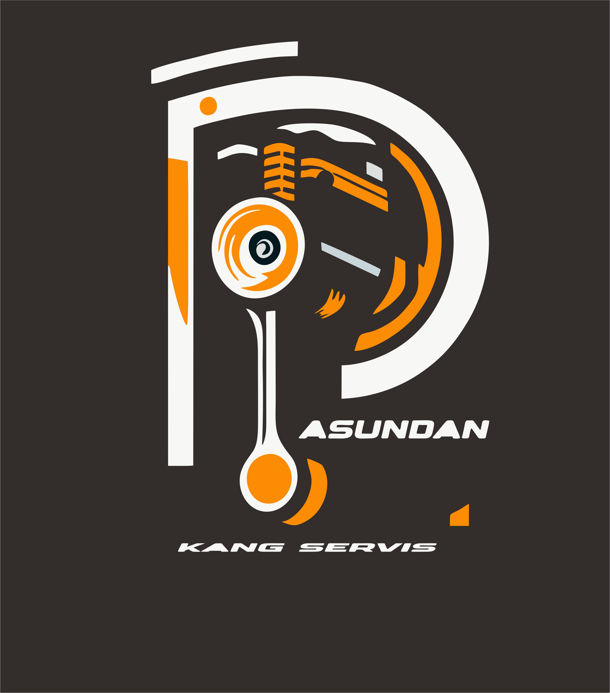

Bengkel Pasundan | Lampung
Servis Mobil Cepat & Hemat di Lampung. Lokasi mudah ditemukan meski dalam gang. Booking gampang via WA!
üõ† Booking Servis via WhatsApp
üìÑ Lihat Katalog Paket Servis Mobil
Klik di sini untuk membuka katalog
üìç Lihat Lokasi Bengkel
üí¨ Testimoni Pelanggan Kami
üìû Hubungi Langsung via Telepon